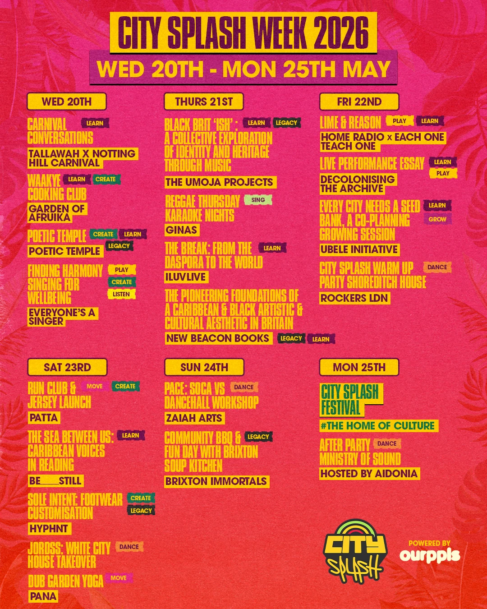

Tuesday – Sunday
City Splash Week
Every year, in the lead-up to City Splash, we host a week-long series of events and activations that bring the festival to life through community partnerships and collaborations.
ourppls x City Splash Fund
ourppls is collaborating with City Splash to also offer 4 x £500 grants for emerging event curators/producers to receive funding to produce an event or workshop during City Splash Week.
The grant is open to organisers of all ages; however, we’ll be prioritising funding to go towards those who are having their first event.
Looking back
What happened at City Splash Week 2026
Last year's City Splash Week ran Wednesday 20th to Monday 25th May, filling the run-up to the festival with community events across South London and beyond — most run independently by local partners, all in the same spirit.
- Wednesday: Carnival Conversations with Tallawah Agency and Notting Hill Carnival, and the Waakye Cooking Club with Garden of Afruika.
- Thursday: Reggae Thursday Karaoke Nights, and a panel on Black British music and identity from The Umoja Projects.
- Friday: Home Radio x Each One Teach One's Lime & Reason night, and Rockers LDN's warm-up party at Shoreditch House.
- Saturday – Sunday: the Patta 5K run & jersey launch, PACE: Soca vs Dancehall, and a community BBQ & domino tournament with Brixton Immortals.
- Monday: City Splash Festival itself, followed by the official afterparty at Ministry of Sound, hosted by Aidonia.

Coming in 2027
What To Expect At City Splash Week
- Fitness & wellness: soca aerobics, yoga set to reggae, neurodivergent growth workshops.
- Cultural conversations: panels on Black British music, Caribbean artistic heritage and diaspora identity.
- Creative workshops: cooking clubs, plant-based growing sessions, painting and collage-making.
- Musical performances: live reggae, dancehall and spoken word nights.
- Community activities: domino tournaments, karaoke nights, and a 5K run with Patta.
The full City Splash Week line-up (every event, venue and ticket link) drops closer to the festival. Keep an eye on our socials so you don’t miss a thing.
*Disclaimer – City Splash is not responsible for the planning or production of the events taking place. All events are being completely managed by independent partners and will need to be contacted directly for all enquiries.
ourppls x City Splash Fund
Got an idea for CS Week?
We offer four £500 grants each year to emerging event curators producing activities during City Splash Week. City Splash isn't responsible for independently organised partner events, but we love backing new ideas.
Get in touch